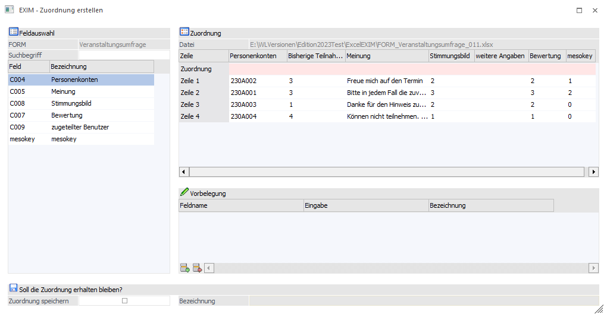
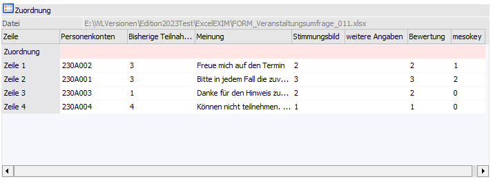
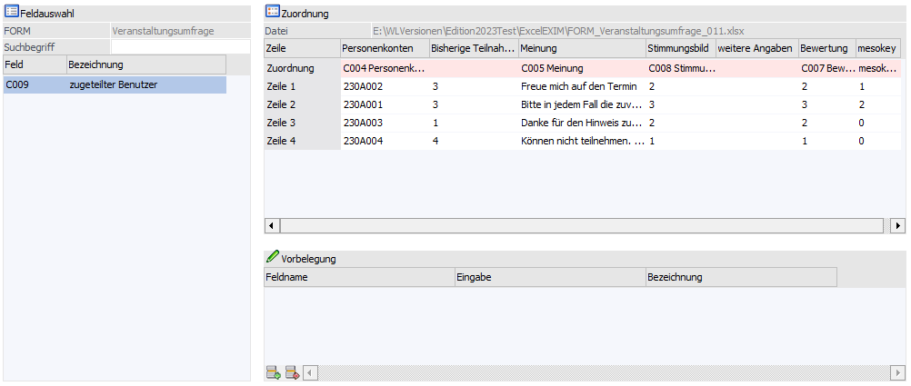
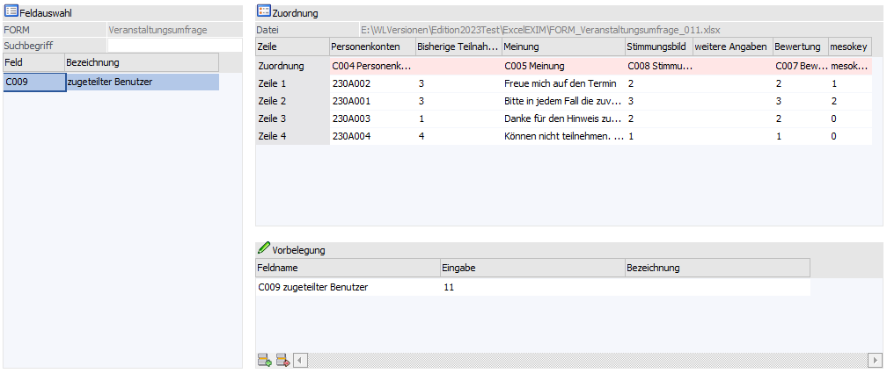
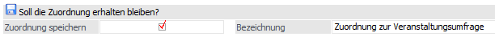
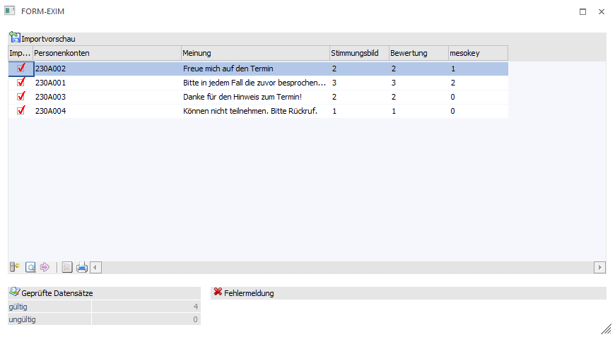
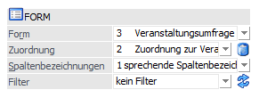
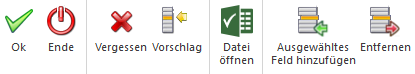

Die Zuordnung ermöglicht bei einer manuellen Vorbelegung im Zusammenspiel mit Treibertyp/Treiber "Excel" ein Verknüpfen der Felder der Importquelle zur selektierten FORM.
ü A - alle Felder
Entspricht der
gesamten FORM-Definition
ü N - neue Zuordnung
erstellen
Ermöglicht eine Zuordnung über das "EXIM - Zuordnungen
erstellen"-Fenster. Daraus kann die vorgenommene Zuordnung gespeichert (und
später erneut verwendet) bzw. optional temporär verwendet werden.
ü T - temporäre Zuordnung
Steht
temporär zur Auswahl, wenn nach einem Importvorgang mit neuer Zuordnung kein
Speichern der Zuordnung durchgeführt wurde.
Insgesamt werden im Fenster drei Tabellen angezeigt:
ü Feldauswahl-Tabelle
ü Zuordnungs-Tabelle
ü Vorbelegungs-Tabelle

Feldauswahl-Tabelle
Beim Aufruf aus dem FORM-EXIM werden in dieser Tabelle die in der FORM definierten Felder aufgelistet.
Angezeigt werden der Spaltenname und die Bezeichnung jedes Feldes. Durch das Ziehen (via Drag and Drop) eines Feldes in eine der beiden anderen Tabellen können die Vorbelegungen bzw. Zuordnungen näher definiert werden.
Ø FORM
Oberhalb wird der Name der FORM ausgegraut angezeigt.
Ø Suchbegriff
Weiterhin gibt es ein Eingabefeld für einen Suchbegriff, mit dem die Anzeige der Felder eingeschränkt werden kann.
Sobald ein Feld in die Zuordnungstabelle verschoben wurde, wird es aus dieser Tabelle entfernt und kann kein weiteres Mal zugeordnet werden (ein Verschieben innerhalb der Zuordnungs-Tabelle ist aber möglich).
Sobald ein Feld in die Vorbelegungs-Tabelle verschoben wurde, verbleibt es dennoch in der Feldauswahl-Tabelle.
Zuordnungs-Tabelle

In dieser Tabelle erfolgt die Zuordnung der Felder aus der Feldauswahl-Tabelle, um so zu definieren, welche Werte aus der Importquelle wo innerhalb der FORM importiert werden sollen. Dabei werden die ersten 10 Zeilen aus der Importquelle abgebildet.
Felder können aus den anderen beiden Tabellen via Drag and Drop in diese Tabelle auf die passende Spalte der Zeile "Zuordnung" gezogen werden.
Ein Feld, welches in der Feldauswahl-Tabelle im Fokus steht, kann innerhalb dieser Tabelle via Doppelklick in die entsprechende Spalte der Zuordnungs-Zeile gelangen. Das Entfernen von Felder aus der Zuordnungs-Zeile (in die Feldauswahl-Tabelle) ist ebenso via Doppelklick möglich.
Innerhalb der Tabelle können Felder von Spalte zu Spalte ebenso durch das Ziehen und Fallenlassen verschoben werden.
Ø Datei
Oberhalb wird der Name der verwendeten Datei ausgegraut angezeigt.
Ø Spaltenbeschriftung
Wenn laut der Einstellung im EXIM-Fenster eine Kopfzeile in der Datei vorhanden ist, so wird diese eingelesen und für die Bezeichnung der Spalten verwendet, andernfalls werden die Spalten hier durchnummeriert.
Ø Zuordnungs-Zeile
Die erste Zeile in der Tabelle ist rosa eingefärbt und bleibt zu Beginn der Zuordnung zunächst frei. Genau hier werden die Zuordnungen durchgeführt.

Vorbelegungs-Tabelle
Hier können Werte für nicht zugeordnete Felder eingetragen werden.

Ø Spalten-Typen
Es gibt Spalten für
ü Feldname
ü Eingabe eines Wertes
ü Bezeichnung (zeigt die dem Wert entsprechenden Bezeichnung - falls dies für das Feld möglich ist)
Wird ein Feld aus dieser Tabelle in die Zuordnungs-Tabelle gezogen, so wird es ebenso aus der Feldauswahl-Tabelle entfernt.
In dieser Tabelle stehen außerdem im Fußteil (analog dazu auch in der Ribbonleiste) Tabellenbuttons zur Verfügung, um so ein, in der Feldauswahl-Tabelle im Fokus stehendes Feld hinzufügen, bzw. die aktuell
selektierte Vorbelegungszeile entfernen zu können.
Ø Soll die Zuordnung erhalten bleiben?
Unten im Fenster kann festgelegt werden, ob die getätigte Zuordnung entweder temporär verwendet, oder dauerhaft gespeichert werden soll.

Ø Zuordnung speichern
Nach Aktivierung der Checkbox steht das Eingabefeld für die Eingabe einer Bezeichnung zur Verfügung.
Wird diese nicht durchgeführt, so steht nach dem Import der FORM-Werte im FORM-EXIM - Fenster bei "FORM" die Zuordnung "T temporäre Zuordnung" zur Verfügung.
Ø Bezeichnung
Ermöglicht die Vergabe eines Namens für die erstellte Zuordnung.
Übernahme der Zuordnung für den laufenden Importvorgang
Mit dem OK-Button kann die Zuordnung/Vorlage gespeichert und in das EXIM-Fenster zurückgekehrt werden. Gem. der zuvor eingestellten Importoptionen wird nun das FORM-EXIM weiter durchgeführt (z. B. Prüfung mit Hilfe der Importvorschau).

Hinweis
Beim Import mit einer (temporären oder gespeicherten) Zuordnung werden nur die Felder aus der FORM berücksichtigt, die in der Zuordnung vorhanden sind. Für alle anderen Spalten in der Importdatei werden Platzhalter eingefügt.
Über den FORM-EXIM Ribbonbuttons "Import" werden die Datensätze final in die FORM importiert.
Nach dem Bestätigen der Status-Meldung steht nun zukünftig im FORM-EXIM-Fenster die optional gespeicherte Zuordnung im Bereich "FORM" bereit und kann bei Bedarf auch wieder gelöscht werden.

Wurde zuvor bei der Zuordnung kein Speichern durchgeführt, so steht nach dem Import der FORM-Werte bei Zuordnung die Option "T temporäre Zuordnung" zur Verfügung.
EXIM - Zuordnungen der erstellten Ribbonbuttons

Ø Ok
Mit dem OK-Button kann die Zuordnung gespeichert und in das EXIM-Fenster zurückgekehrt werden.
Ø Ende
Schließt das Fenster.
Ø Vergessen
Mit diesem Button können alle Zuordnungen verworfen werden, sodass die Feldauswahl-Tabelle danach neu gefüllt wird.
Ø Vorschlag
Dieser Button versucht, aufgrund der Bezeichnung jeder Spalte der Zuordnungs-Tabelle das entsprechende Feld in der Feldauswahl-Tabelle zu finden und zuzuordnen.
Ø Datei öffnen
Dieser Button öffnet die verwendete Datei in Excel.